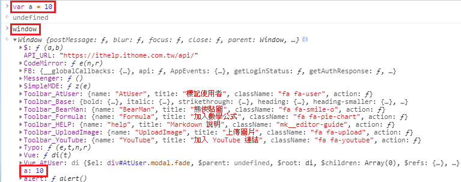

JavaScript入門篇 - function
函式 function 指的是將一段程式指令包裝起來，可以重複使用且維護容易，也不會互相干擾
定義函式的方式
函式宣告（Function Declaration)
函式宣告為最常見的寫法
函式最面前使用
function進行宣告接著是函式的名稱 ，但也有可能沒有名稱
再來是小括號
( )的部分，稱為參數arguments，參數可以不只一個，參數之間使用逗號 , 隔開最後是大括號
{ }的部分，內含需要重複執行的內容，是函式的主要功能區塊透過呼叫函式名稱來使用函式
1
2
3
4
5
6function 函式名稱 (參數1, 參數2){
重複執行的內容
};
// 呼叫函式
函式名稱 (參數1, 參數2);
函式表達式 (Function Expressions)
函式運算式是透過等號 = 將函式指定給某個變數
1 | var 變數名稱 = function (參數){ 重複執行的內容 }; |
這裡可以發現在等號 = 後面的函式 “沒有函式名稱”，因為這裡的函式名稱只有在自己 “函式內的區塊” 有效，脫離此函式後，函式名稱就不存在，使用此函式則是直接呼叫變數名稱
變數的有效範圍 Scope
變數分為 “全域變數” 和 “區域變數”，切分變數有效範圍的最小單位是 function，我們透過以下程式碼來解釋他們的差異
1 | // 全域變數 |
- 在函式內宣告的變數稱為 區域變數，區域變數只有在函式執行的時候存在
- 在函式外宣告的變數稱為 全域變數，因為區域變數只屬於函式內，所以最後的 console.log( x ); 自然是全域變數的 1
- 所以函式內外兩個變數 x 其實是不同的變數
如何取得函式內的值 ?
透過在函式外宣告變數，在函式內賦值，在呼叫函式後，我們就可以取得函式內的值
1 | // 全域變數 |
沒有使用 var 宣告的變數很危險
如果全域變數已經有賦值，函式內的變數沒有使用 var 宣告，就會向外層尋找同名的變數，直到最外層的 “全域變數”
1 | // 全域變數 |
全域物件 window
所有宣告的全域變數其實都是 “全域物件(頂級物件) window “的屬性，在瀏覽器的 console 輸入 window，我們可以看到所有功能和已經宣告的全域變數
1 | var a = 10; |

提升 hoisting
變數的提升
對於已經選告的變數，JS 會自動將其提升至最上方，但要注意的是，提升的只有 “變數的宣告” ，”不包括變數的值”，所以變數還是盡量都在最上面宣告完後再開始使用
1 | // in .js |
函式的提升
函式宣告
與變數不同的地方是使用 函式宣告 定義的函式會連同內容完全提升，所以可以在宣告前呼叫使用
1 | square(2); // 4 |
函式運算式
但透過 “函式運算式” 定義的函式則會出現 “錯誤”
1 | square(2); // TypeError: square is not a function |
回傳 return
透過 return 可以把值回傳給函式，再透過呼叫函式取得值
1 | function getHamPrice(num){ |
function 計算機案例
- 首先透過
.value取得內部的值，取得的值為字串string - 再透過
.parseInt將取得的值由字串string轉為數字number - 最後將數字運算完後透過
.textContent帶入
結論
變數有效範圍 scope 的最小單位是 function
即使是在 function 內，沒有使用 var 宣告的變數仍會變成 “全域變數”
“全域變數” 指的是全域物件(頂層物件) window 的 “屬性”